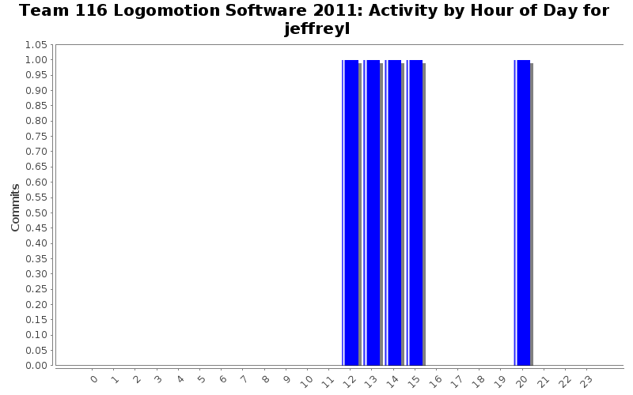
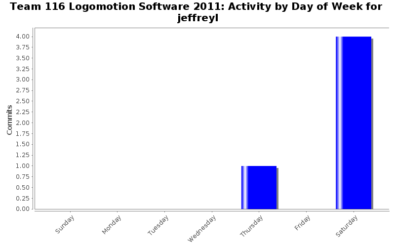

| Directory | Changes | Lines of Code | Lines per Change |
|---|---|---|---|
| / | 5 (100.0%) | 31 (100.0%) | 6.2 |
added fix to navigation. robot now stops after traveling required distance.
3 lines of code changed in 1 file:
changed rotate angle requirement to a margin of error of 2 degrees
-Reginald
2 lines of code changed in 1 file:
changed nav
5 lines of code changed in 1 file:
added log.h to Minibot Deployment
-Reginald
4 lines of code changed in 1 file:
added timer to minibot deployment source file
-Reginald
17 lines of code changed in 1 file: